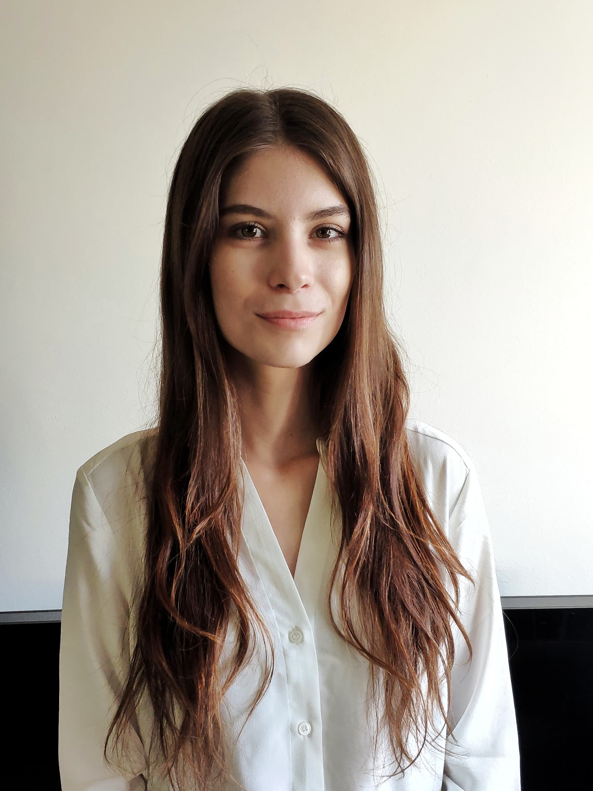
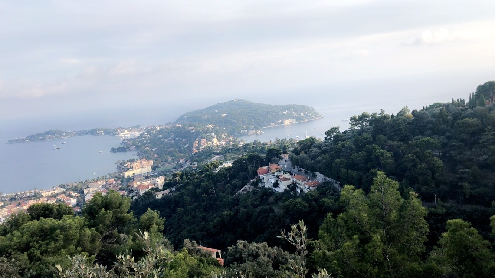
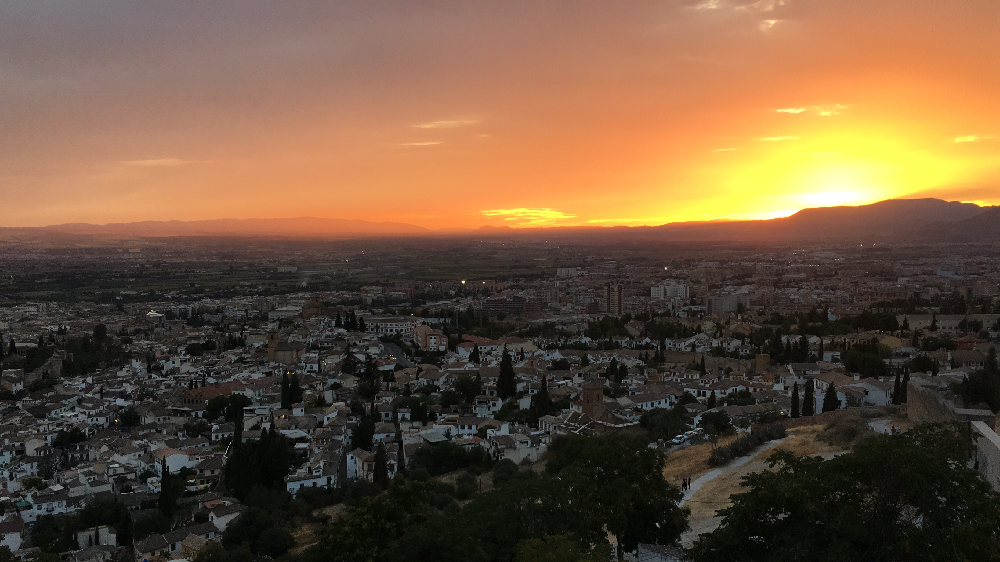
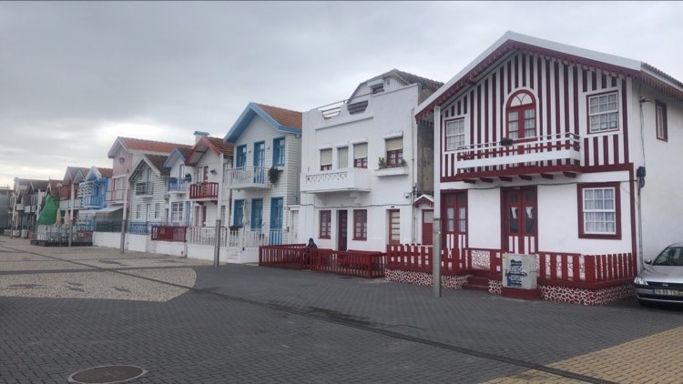
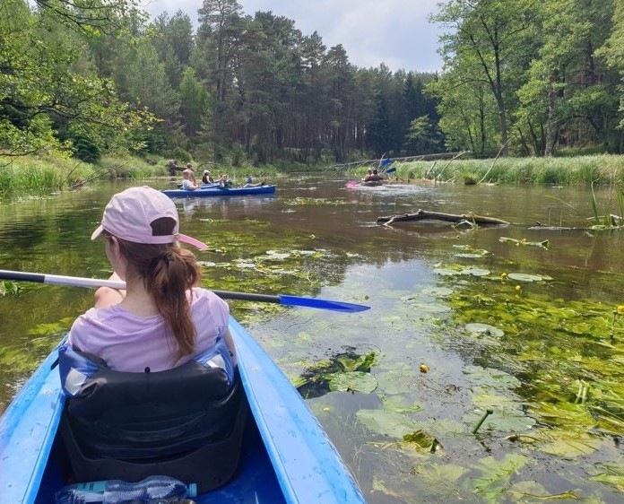
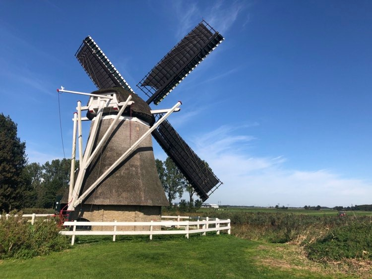

Witam!
Mam na imię Kamila, a to jest strona o mnie.O mnie
Pochodzę z Gorzowa Wielkopolskiego. Mam 22 lata. W tym roku ukończyłam studia pierwszego stopnia na UAM w Poznaniu na kierunku Pedagogika - specjalność Wychowanie Przedszkolne i Nauczanie Początkowe. Jednak w 2019 roku zaczęłam studiować drugi kierunek - Nauczanie Matematyki i Informatyki, gdzie rozpoczęła się moja przygoda z programowaniem.

Moje hobby
Siatkówka
Uwielbiam gry drużynowe, a zwłaszcza siatkówkę. Trenowałam ją przez 6 lat, a zaczęłam w szkole podstawowej, gdy poszłam do klasy o profilu sportowym. Była to dla mnie zawsze duża zabawa i w dalszym ciagu, gdy tylko nadarzy się okazja, z przyjemnością gram z przyjaciółmi.Rośliny doniczkowe
Moją kolejną pasją są rośliny doniczkowe. Uważam, że kolorowe doniczki z zadbanymi kwiatkami są niezbędnym elementem mojego domu. Niezmiernie sprawia mi radość, gdy jakaś roślinka wypuści nowego listka, bejbika, czy kwiatka.Podróżowanie
Bardzo ważne jest dla mnie podróżowanie, zarówno po Polsce, jak i do innych krajów. Dlatego zawsze staram się, aby w wolnych chwilach zwiedzać nowe miejsca i odkrywać obce kultury. Po każdej odbytej podróży jestem bogatsza o nową wiedzę i doświadczenia, co sobie ogromnie cenię.Bilard
Moim ostatnim zainteresowaniem, tym razem dosyć nietypowym, jest bilard. Wieczorna gra w bilarda jest dla mnie idealnie spędzonym czasem. Gram towarzysko już od wielu lat i nigdy mi się to nie znudzi.
Podróże
Uwielbiam podróżować i zwiedzać nowe miejsca. Wtedy zawsze staram się wykonać kilka pamiątkowych zdjęć.

Lazurowe Wybrzeże, Francja 2018

Granada, Hiszpania 2019

Aveiro, Portugalia 2019

Malta 2020

Polska 2020

Leeuwarden, Holandia 2020